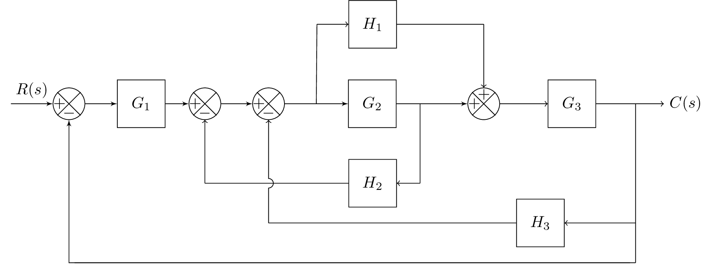

\documentclass{standalone}
\usepackage{blox}
\usepackage{tikz}
\usetikzlibrary{positioning}
\newcommand{\equal}{=}
\usepackage{tikz}
\usetikzlibrary{intersections}
\usepackage{tkz-euclide}
% Radius for arc over intersection
\def\radius{1.mm}
\tikzset{
connect/.style args={(#1) to (#2) over (#3) by #4}{
insert path={
let \p1=($(#1)-(#3)$), \n1={veclen(\x1,\y1)},
\n2={atan2(\y1,\x1)}, \n3={abs(#4)}, \n4={#4>0 ?180:-180} in
(#1) -- ($(#1)!\n1-\n3!(#3)$)
arc (\n2:\n2+\n4:\n3) -- (#2)
}
},
}
\begin{document}
\begin{tikzpicture}
\bXInput{A} % Input
\bXComp{B}{A} % First adder
\bXLink[$R(s)$]{A}{B} % Input Label
\bXBloc[2]{C}{$G_1$}{B} % Block G1
\bXLink{B}{C} % First added -- G1
\bXComp{D}{C} % Second adder
\bXComp{E}{D} % Third adder
\bXBranchx[3]{E}{EH1} % Branch for H1, G2
\bXBloc[2]{EH2}{$G_2$}{EH1} % Block G2
\bXBranchy[-5]{EH2}{EV2} % Branch up for H1 -- above G1
\bXBloc[-1.5]{H2}{$H_1$}{EV2} % Block H1
\bXBranchx[-3.5]{H2}{H2left} % Branch for H1, G2
\bXBranchx[3]{EH2}{Bran2} % Branch after G2 and for H2
\bXBranchy[5]{Bran2}{Bran2Down} % beneath branch 2
\bXBloc[-4.5]{H2Block}{$H_2$}{Bran2Down}
\bXSuma{adder4}{Bran2}
\bXLink{C}{D}
\bXLink{D}{E}
\bXLink{E}{EH2}
\bXLink{EH2}{adder4} % G2 to adder
\bXBloc[3]{G3Block}{$G_3$}{adder4} % G3
\bXBranchx[4]{G3Block}{BranEnd} % branch before output
\bXBranchy[7.5]{BranEnd}{H3BlockRight} % Right H3 Block
\bXBranchy[2.5]{H3BlockRight}{BranEndReturn} % Right H3 Block
\bXBranchy[7.5]{E}{adder3down} % Below adder3
\bXBloc[-7.5]{H3Block}{$H_3$}{H3BlockRight} % H3 Block
\draw[-] (BranEnd.center) -- (H3BlockRight.center);
\draw[->] (H3BlockRight.center) -- (H3Block);
\draw[-] (H3BlockRight.center) -- (BranEndReturn.center);
\bXBranchy[10]{B}{adder1Down}
\draw[-] (BranEndReturn.center) -- (adder1Down);
\bXBranchy[5]{D}{adder2down} % beneath adder2
\bXBranchy[-5]{adder4}{adder4up} % beneath adder4
%\bXLinkyx{EH1.center}{H2} % -- Connection for branch 1 and H1
\draw[-] (EH1.center) -- (H2left.center);
\draw[->] (H2left.center) -- (H2);
\draw[->] (Bran2Down.center) -- (H2Block);
\draw[-] (Bran2Down.center) -- (Bran2.center);
\draw[-,name path=H2 to adder2down] (H2Block) -- (adder2down.center); % used in intersection
\draw[->] (adder2down.center) -- (D);
\draw[-] (H2) -- (adder4up.center);
\draw[->] (adder4up.center) -- (adder4);
\draw[->] (adder4) -- (G3Block);
\node[right = 0.5cm of BranEnd] (end) {$C(s)$};
\draw[->] (G3Block) -- (end);
\draw[-] (H3Block) -- (adder3down.center);
\path[name path=line] (adder3down.center) -- (E);
\path[name intersections={of=H2 to adder2down and line,by=inter}];
\draw[->,connect=(adder3down.center) to (E) over (inter) by 3pt ];
\bXLinkxy{BranEndReturn}{B}
%\bXLinkyx{Bran2}{H2Block}
\end{tikzpicture}
\end{document}Created by David Li